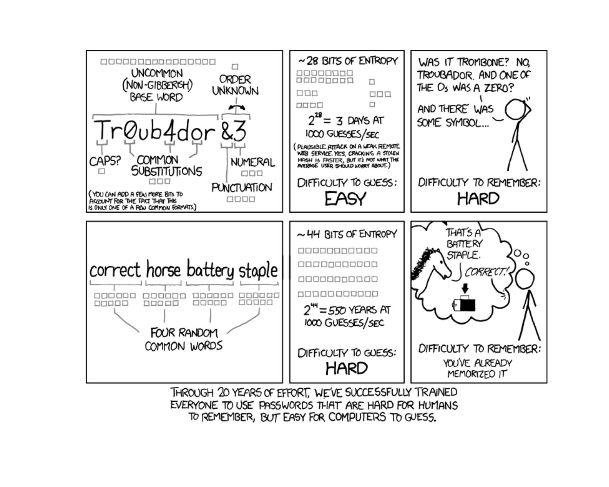
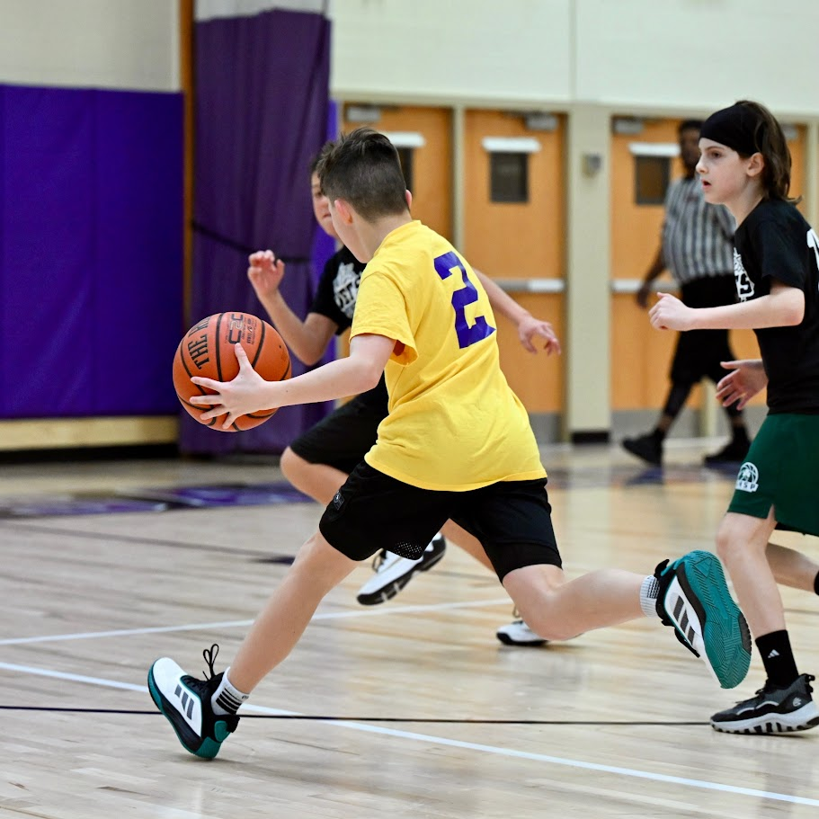
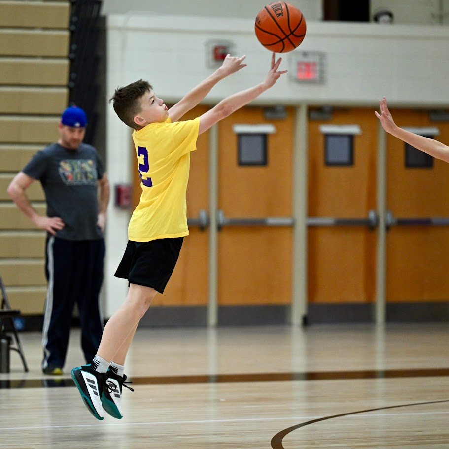
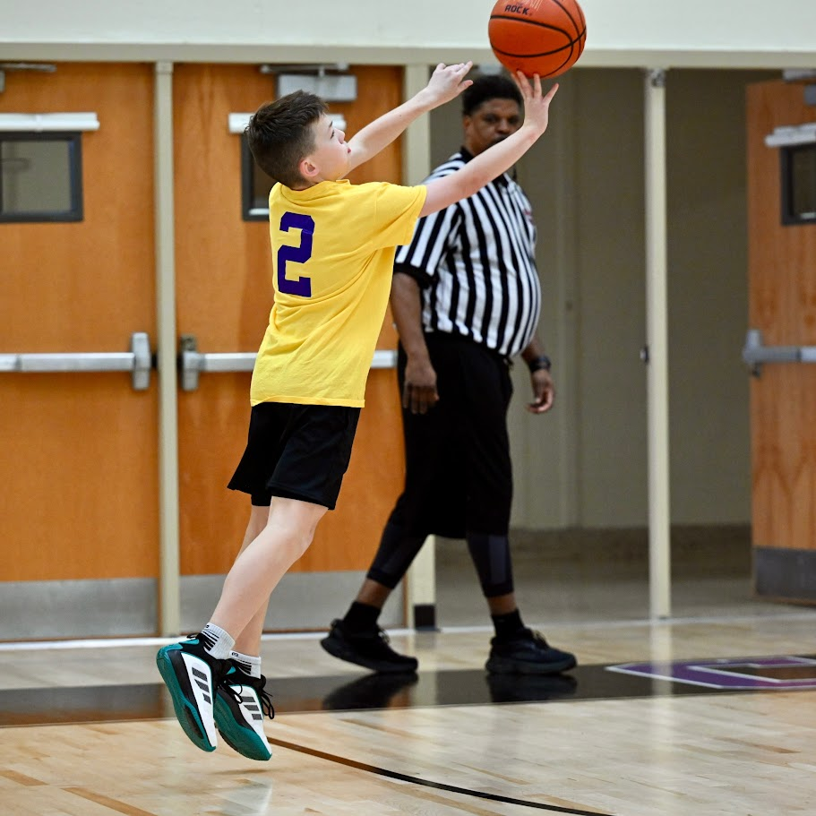

Lesson 8: Counting & Independence

What We Did: Lessons 6 & 7
Quick Review: Probability Basics (Lesson 6)
NoteKey Concepts from Lesson 6
Sample Spaces and Events:
- Sample space \(S\) = set of all possible outcomes
- Event = subset of the sample space
- Operations: Union (\(A \cup B\)), Intersection (\(A \cap B\)), Complement (\(A^c\))
Kolmogorov Axioms:
- \(P(A) \geq 0\)
- \(P(S) = 1\)
- For mutually exclusive events: \(P(A \cup B) = P(A) + P(B)\)
Key Rules:
- Complement Rule: \(P(A^c) = 1 - P(A)\)
- Addition Rule: \(P(A \cup B) = P(A) + P(B) - P(A \cap B)\)
Quick Review: Conditional Probability (Lesson 7)
NoteKey Concepts from Lesson 7
Conditional Probability: \[P(A \mid B) = \frac{P(A \cap B)}{P(B)}\]
Multiplication Rule: \[P(A \cap B) = P(A) \cdot P(B \mid A) = P(B) \cdot P(A \mid B)\]
Law of Total Probability: \[P(A) = P(B) \cdot P(A \mid B) + P(B^c) \cdot P(A \mid B^c)\]
Bayes’ Theorem: \[P(B \mid A) = \frac{P(B) \cdot P(A \mid B)}{P(B) \cdot P(A \mid B) + P(B^c) \cdot P(A \mid B^c)}\]
What We’re Doing: Lesson 8
Objectives
- Count sample spaces of ordered or unordered events with or without replacement
- Apply the multiplication principle to count outcomes
- Distinguish between permutations and combinations
- Understand how to account for independent events
Required Reading
Devore, Sections 2.3 and 2.5
Break!
Reese

Cal



Snow!

The Takeaway for Today
NoteKey Concepts from Lesson 8
Multiplication Principle: If an experiment has stages with \(n_1, n_2, \ldots, n_k\) outcomes, the total outcomes are \(n_1 \times n_2 \times \cdots \times n_k\).
Counting Formulas:
| With Replacement | Without Replacement | |
|---|---|---|
| Ordered | \(n^k\) | \(P(n,k) = \frac{n!}{(n-k)!}\) |
| Unordered | \(\binom{n+k-1}{k}\) | \(\binom{n}{k} = \frac{n!}{k!(n-k)!}\) |
Independence:
- \(A\) and \(B\) are independent if \(P(A \cap B) = P(A) \cdot P(B)\)
- Equivalently: \(P(A \mid B) = P(A)\)
- Independent \(\neq\) Mutually Exclusive!
- For independent events: \(P(A_1 \cap \cdots \cap A_n) = \prod P(A_i)\)
Why Counting Matters
The Equally Likely Formula
Recall from Lesson 6: when all outcomes are equally likely,
\[P(A) = \frac{|A|}{|S|} = \frac{\text{number of outcomes in } A}{\text{total number of outcomes}}\]
To use this formula, we need to count outcomes. For simple experiments (one die, one card), this is easy. But what about more complex experiments?
Example: How many 5-card poker hands are possible from a standard 52-card deck?
We need systematic counting techniques!
The Multiplication Principle
Product Rule for Counting
ImportantThe Multiplication Principle
If an experiment consists of two stages, where:
- Stage 1 has \(n_1\) possible outcomes
- Stage 2 has \(n_2\) possible outcomes
Then the total number of outcomes for the experiment is:
\[n_1 \times n_2\]
This extends to \(k\) stages:
\[n_1 \times n_2 \times \cdots \times n_k\]
Example: Softball Uniforms
My daughter’s softball team (the Warriors) has accumulated quite a collection of gear. How many unique uniform combinations can she put together?

- Jerseys (4): royal blue, white, pink, and an accidental purple
- Pants (3): black, white, blue
- Socks (2): black, blue
- Batting gloves (2): two different pairs
\[\text{Total combinations} = 4 \times 3 \times 2 \times 2 = 48\]
Ordered vs. Unordered Selections
Two Key Questions
When selecting items from a group, ask yourself:
- Does order matter? (Is selecting A then B different from B then A?)
- Is replacement allowed? (Can the same item be selected again?)
| With Replacement | Without Replacement | |
|---|---|---|
| Ordered | \(n^k\) | \(P(n,k) = \frac{n!}{(n-k)!}\) |
| Unordered | \(\binom{n+k-1}{k}\) | \(\binom{n}{k} = \frac{n!}{k!(n-k)!}\) |
Ordered Selections WITH Replacement
Sampling with Replacement (Order Matters)
When we select \(k\) items from \(n\) options with replacement and order matters:
\[\text{Number of outcomes} = n^k\]
Example: There are 18 cadets in your section. You have 3 questions to ask during class. For each question, a random cadet is selected to answer. The same cadet can be called on more than once.
- Order matters: Being called on for Question 1 is different from Question 2
- Replacement: The same cadet can be called again
\[18^3 = 5,\!832 \text{ possible sequences}\]
Ordered Selections WITHOUT Replacement
Permutations
When we select \(k\) items from \(n\) options without replacement and order matters, we get a permutation:
\[P(n,k) = \frac{n!}{(n-k)!} = n \times (n-1) \times (n-2) \times \cdots \times (n-k+1)\]
Special case: arranging all \(n\) items gives \(n!\) permutations.
Why? For the first selection, we have \(n\) choices. For the second, \(n-1\) (one item is used). For the third, \(n-2\), and so on.
Example: Board Problem Presentations
Same 18 cadets. Now you assign 3 different cadets to present Board Problems 1, 2, and 3 on the board.
- Order matters: Who presents Problem 1 vs. Problem 2 is a different assignment
- No replacement: Each cadet presents at most one problem
\[P(n, k) = \frac{n!}{(n-k)!} = \frac{18!}{(18-3)!} = \frac{18!}{15!} = 18 \times 17 \times 16 = 4,\!896\]
Compare to with replacement: \(18^3 = 5,\!832\) — fewer options when we can’t repeat!
Unordered Selections WITHOUT Replacement
Combinations
When we select \(k\) items from \(n\) options without replacement and order does NOT matter, we get a combination:
\[\binom{n}{k} = \frac{n!}{k!(n-k)!} = \frac{P(n,k)}{k!}\]
Read “\(\binom{n}{k}\)” as “\(n\) choose \(k\).”
Why divide by \(k!\)? Permutations count every ordering of the same \(k\) items as different. Since we don’t care about order, we divide out the \(k!\) rearrangements.
Example: Study Group
Same 18 cadets. You choose 3 to form a study group. There are no roles — just who’s in the group.
- Order doesn’t matter: The group {Adams, Baker, Clark} is the same regardless of the order you picked them
- No replacement: Each cadet is either in the group or not
\[\binom{18}{3} = \frac{18!}{3! \cdot 15!} = \frac{18 \times 17 \times 16}{3 \times 2 \times 1} = 816\]
Compare to permutations: \(P(18,3) = 4,\!896\). Since we no longer care about order, we divide out the \(3! = 6\) rearrangements: \(4,\!896 / 6 = 816\) .
Permutations vs. Combinations: Key Difference
TipWhen Does Order Matter?
Order matters (Permutation):
- Assigning ranks/positions (1st place vs. 2nd place)
- Passwords, PINs, codes
- Sequences of events
Order does NOT matter (Combination):
- Selecting a group/team/committee
- Choosing cards for a hand
- Picking items from a menu (when the set matters, not the sequence)
Quick comparison: Choosing 3 from our 18 cadets:
- Permutations (board problems): \(P(18,3) = 4,\!896\) — each assignment of cadets to specific problems is different
- Combinations (study group): \(\binom{18}{3} = 816\) — only group membership matters
- Note: \(4,\!896 / 3! = 4,\!896 / 6 = 816\) ✓
Unordered Selections WITH Replacement
Stars and Bars
When we select \(k\) items from \(n\) options with replacement and order does NOT matter:
\[\binom{n+k-1}{k} = \frac{(n+k-1)!}{k!\,(n-1)!}\]
Why? Imagine laying out \(k\) identical stars (the items you’re choosing) in a row. You need \(n-1\) bars to divide those stars into \(n\) bins. Any arrangement of stars and bars gives a valid selection, so the count equals the number of ways to place the \(n-1\) bars among the \(k + (n-1)\) total positions: \(\binom{n+k-1}{k}\).
Example: Bonus Points
Same 18 cadets. You have 3 identical bonus points to award. A cadet can receive more than one point — only the total each cadet receives matters, not the order you hand them out.
- Order doesn’t matter: Just the final distribution of points
- Replacement: A cadet can receive multiple points
Picture 3 stars and 17 bars (one bar between each of the 18 cadets). Choose where to place the 3 stars among the \(3 + 17 = 20\) positions:
\[\binom{n+k-1}{k} = \binom{18 + 3 - 1}{3} = \binom{20}{3} = \frac{20 \times 19 \times 18}{3 \times 2 \times 1} = 1,\!140\]
Counting in Probability
Putting It Together
Many probability problems reduce to counting:
\[P(A) = \frac{\text{number of outcomes in } A}{\text{total outcomes in } S} = \frac{|A|}{|S|}\]
Example: All from 1st Regiment
Your section has 18 cadets drawn from all 4 regiments. Six are from 1st Regiment. You randomly select 3 cadets for a study group. What is the probability all 3 are from 1st Regiment?
Total ways to choose 3 from 18:
\[|S| = \binom{18}{3} = \frac{18!}{3! \cdot 15!} = \frac{18 \times 17 \times 16}{3 \times 2 \times 1} = 816\]
Ways to choose 3 from the 6 first-regiment cadets:
\[|A| = \binom{6}{3} = \frac{6!}{3! \cdot 3!} = \frac{6 \times 5 \times 4}{3 \times 2 \times 1} = 20\]
Probability:
\[P(\text{all 1st Regiment}) = \frac{20}{816} = \frac{5}{204} \approx 0.0245\]
Independence
What Does Independence Mean?
Two events are independent if knowing one occurred doesn’t change the probability of the other.
Events \(A\) and \(B\) are independent if:
\[P(A \cap B) = P(A) \cdot P(B)\]
Equivalently: \(P(A \mid B) = P(A)\) and \(P(B \mid A) = P(B)\)
Intuition: Learning that \(B\) happened doesn’t update your belief about \(A\).
Example: Independence Check
Roll a fair die. Let:
- \(A\) = “roll an even number” = \(\{2, 4, 6\}\)
- \(B\) = “roll a number \(\leq 3\)” = \(\{1, 2, 3\}\)
Check independence:
- \(P(A) = \frac{3}{6} = \frac{1}{2}\)
- \(P(B) = \frac{3}{6} = \frac{1}{2}\)
- \(P(A \cap B) = P(\{2\}) = \frac{1}{6}\)
- \(P(A) \cdot P(B) = \frac{1}{2} \cdot \frac{1}{2} = \frac{1}{4}\)
Since \(\frac{1}{6} \neq \frac{1}{4}\), events \(A\) and \(B\) are NOT independent.
Also verify: \(P(A \mid B) = \frac{P(A \cap B)}{P(B)} = \frac{1/6}{1/2} = \frac{1}{3} \neq \frac{1}{2} = P(A)\)
Knowing the roll is \(\leq 3\) changes the probability of an even number.
Example: Another Independence Check
Roll a fair die. Let:
- \(A\) = “roll an even number” = \(\{2, 4, 6\}\)
- \(C\) = “roll a number divisible by 3” = \(\{3, 6\}\)
Check independence:
- \(P(A) = \frac{3}{6} = \frac{1}{2}\)
- \(P(C) = \frac{2}{6} = \frac{1}{3}\)
- \(P(A \cap C) = P(\{6\}) = \frac{1}{6}\)
- \(P(A) \cdot P(C) = \frac{1}{2} \cdot \frac{1}{3} = \frac{1}{6}\)
Since \(\frac{1}{6} = \frac{1}{6}\), events \(A\) and \(C\) ARE independent!
Knowing the roll is divisible by 3 doesn’t change the probability of it being even — it’s still \(\frac{1}{2}\). Verify: \(P(A \mid C) = \frac{P(A \cap C)}{P(C)} = \frac{1/6}{1/3} = \frac{1}{2} = P(A)\) ✓
When IS Independence Natural?
Independence arises naturally when experiments are physically unrelated:
- Flipping a coin, then rolling a die
- Drawing from one deck, then drawing from a different deck
- Two different cadets’ test scores (assuming no cheating!)
- Successive tosses of a fair coin
WarningIndependence vs. Mutually Exclusive
These are DIFFERENT concepts!
- Mutually exclusive: \(A \cap B = \emptyset\) — they CANNOT both happen
- Independent: \(P(A \cap B) = P(A) \cdot P(B)\) — one doesn’t affect the other
If \(A\) and \(B\) are mutually exclusive with \(P(A) > 0\) and \(P(B) > 0\), then they are NOT independent (knowing \(A\) occurred means \(B\) definitely didn’t!).
Board Problems
Problem 1: Multiplication Principle
A battalion commander must plan an operation by choosing:
- 1 of 4 companies to lead the assault
- 1 of 3 routes to the objective
- 1 of 2 times for the attack (dawn or dusk)
NoteQuestion
How many different operation plans are possible?
TipAnswer
Each choice is a separate stage with a different number of options: \[4 \times 3 \times 2 = 24\]
Problem 2
A cadet’s locker combination is a sequence of 4 digits from 0 to 9 (digits may repeat).
NoteQuestions
- Does order matter?
- Is this with or without replacement?
- How many possible combinations are there?
- What is the probability of guessing correctly on the first try?
TipAnswers
Yes — the sequence 1-2-3-4 is different from 4-3-2-1.
With replacement — digits may repeat.
Ordered, with replacement (\(n = 10\), \(k = 4\)):
\[n^k = 10^4 = 10,\!000\]
\[P(\text{correct on first try}) = \frac{1}{10,\!000} = 0.0001\]
Problem 3
From a squad of 12 cadets, the platoon leader must assign three distinct roles: team leader, assistant team leader, and radio operator.
NoteQuestions
- Does order matter?
- Is this with or without replacement?
- How many ways can these 3 positions be filled?
- What is the probability that a specific cadet (CDT Jones) is assigned team leader?
TipAnswers
Yes — being assigned team leader is different from being assigned radio operator.
Without replacement — each cadet fills at most one role.
Ordered, without replacement (\(n = 12\), \(k = 3\)):
\[P(n,k) = \frac{n!}{(n-k)!} = \frac{12!}{9!} = 12 \times 11 \times 10 = 1,\!320\]
If CDT Jones is team leader, the remaining 2 roles are filled from the other 11: \[P(11, 2) = 11 \times 10 = 110\] \[P(\text{Jones is team leader}) = \frac{110}{1,\!320} = \frac{1}{12}\]
This makes sense — each of the 12 cadets is equally likely to be team leader.
Problem 4
A cadet buys 4 drinks from a vending machine that stocks 3 flavors (Gatorade, Celsius, water). Repeats are allowed.
NoteQuestions
- Does order matter?
- Is this with or without replacement?
- How many different selections are possible?
TipAnswers
No — buying Gatorade then Celsius is the same selection as Celsius then Gatorade. Only the total of each flavor matters.
With replacement — you can buy the same flavor more than once.
Unordered, with replacement (\(n = 3\) types, \(k = 4\) drinks):
- \[\binom{n+k-1}{k} = \binom{3+4-1}{4} = \binom{6}{4} = \frac{6!}{4! \cdot 2!} = \frac{6 \times 5}{2 \times 1} = 15\]
Stars and bars: place 4 stars among 3 bins separated by 2 bars → choose 4 positions from 6 total.
Problem 5: Independence
At a marksmanship qualification, data from 200 cadets shows:
- 160 qualified Expert on the M4 rifle
- 120 qualified Expert on the M9 pistol
- 96 qualified Expert on both
NoteQuestions
- What is \(P(\text{M4 Expert})\)?
- What is \(P(\text{M9 Expert})\)?
- What is \(P(\text{M4 Expert AND M9 Expert})\)?
- What is \(P(\text{M4 Expert} \mid \text{M9 Expert})\)?
- Are M4 and M9 qualifications independent? Verify using the definition.
TipAnswers
\[P(\text{M4}) = \frac{160}{200} = 0.80\]
\[P(\text{M9}) = \frac{120}{200} = 0.60\]
\[P(\text{M4} \cap \text{M9}) = \frac{96}{200} = 0.48\]
\[P(\text{M4} \mid \text{M9}) = \frac{P(\text{M4} \cap \text{M9})}{P(\text{M9})} = \frac{0.48}{0.60} = 0.80\]
Yes, they are independent. Two ways to verify:
- \(P(\text{M4} \mid \text{M9}) = 0.80 = P(\text{M4})\) — knowing a cadet qualified Expert on the M9 doesn’t change the probability they qualified Expert on the M4. ✓
- \(P(\text{M4}) \cdot P(\text{M9}) = 0.80 \times 0.60 = 0.48 = P(\text{M4} \cap \text{M9})\) ✓
Before You Leave
Today
- The multiplication principle for counting outcomes
- Permutations (ordered) vs. Combinations (unordered)
- With vs. without replacement
- Independence: \(P(A \cap B) = P(A) \cdot P(B)\)
- Multiplication rule for independent events
Any questions?
Next Lesson
Lesson 9: Discrete Random Variables
- Probability mass functions (PMFs)
- Cumulative distribution functions (CDFs)
- Expected value and variance
Upcoming Graded Events
- WebAssign 2.3, 2.5 - Due before Lesson 9
- Exploratory Data Analysis - Due Lesson 9
- WPR I - Lesson 16